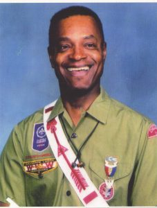
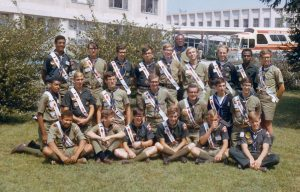

John N. Brown – High School Graduation – 1952
John Norman Brown was born on Saturday January 13, 1934 at Cook County Hospital to Evelyn Brown (nee Palmer). An only child, he and his mother settled in the family home at 6424 S. Champlain Av. in the West Woodlawn neighborhood of Chicago and were members of the Woodlawn AME Church. Upon graduating from the McCosh elementary school (later renamed the Emmett Till elementary school – as Emmett lived only a block away), John attended Englewood High School, graduating in 1952 with a life's slogan of "Success in My Undertakings" appearing in his yearbook.
As a youth John would sit on the steps of the Lincoln Memorial Church at 64th and Champlain and watch the older boys who were Scouts march off to their Friday evening troop meetings in their starched uniforms. Under the guidance of Larry Branch and Joe Merton, he joined Troop 541 in 1945; 541 joined with Troop 1542 under the leadership of Lafayette Morrison and John attended Owasippe for the first time in 1946 being quartered at Camp Belnap riding from Chicago in the back of a coal truck with his personal gear. Owasippe took the lead in the Boy Scout program by racially integrating youth camping in 1949, thus Belnap was closed and John went on to attend Camp Blackhawk from 1949 until 1952. As a Scout John earned 40 merit badges and achieved the rank of Eagle Scout on 11/20/1949 in Troop 1542. He was recognized by his fellows during the summer of 1950 and became an Ordeal member of the Order of the Arrow on 07/21/1950 joining Ta-Ko-Dah Chapter.
After serving his country in the U.S. Army from 1953-1955 in Schwäbisch Gmünd, Germany as decoding specialist, John returned home to pursue his education at the Rocky Mountain College in Billings, MT. While earning his liberal arts degree he was exposed to a variety of Native American tribal cultures at the school. This experience set John forward on a lifelong journey to bring these customs and traditions into the Scouting experience. Within the Order of the Arrow John served the Omaha and later Matoka Chapters as an Associate Advisor and Ceremonial Team Coordinator. In the Douglas District, John served as a Commissioner and merit badge counselor. Matoka Chapter in recognition of his outstanding service and commitment to Scouting, nominated John to the Vigil Honor in 1972. It was a cool Owasippe night during which John meditated on the call to service of his fellow men. On August 11, 1972 John became forevermore known as "Gunaquot Cuwe – Tall Pine Tree".
It was the flexibility of teaching that allowed John to pursue his Scouting passions. Over the years, John has not only attended, but in most instances worked on the staff of: four World Jamborees, ten National Jamborees, and twenty-four National Order of the Arrow Conferences. He was the Scoutmaster of his World Jamboree contingent troop in 1971 and Scoutmaster of the O/A Service Corps at the 1973 National Jamboree. At the most recent NOAC in 2015 he and Norville Carter were docents at the O/A museum explaining how Scouting led the nation in terms of recognizing the importance of integration and diversity long before society began to focus on these issues.
For his tireless efforts, John received the Silver Beaver award in Chicago Area Council in 1978, the Silver Antelope Award in 1999, and the Founders Award in 2008 through Michigamea Lodge #110.
Outside of Scouting, John met Ethel Thompson at a neighborhood dance in West Woodlawn. They became the best of friends and were married on December 29, 1965, and have two children, Norm and Stephanie. John worked his entire career in education at the Carter elementary school at 57th and Michigan Avenue. His wife Ethel worked in education as a teacher, school counselor, and Assistant Principal.
To John, the Vigil Honor is the breath in life each day. It is a driving force that keeps him focused on a mindfulness of the needs of others in society and how we are obliged to seek out these needs and fulfill them as the wish of our Creator.

